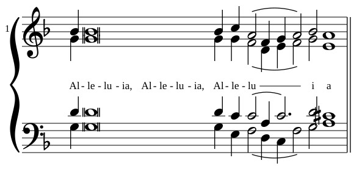
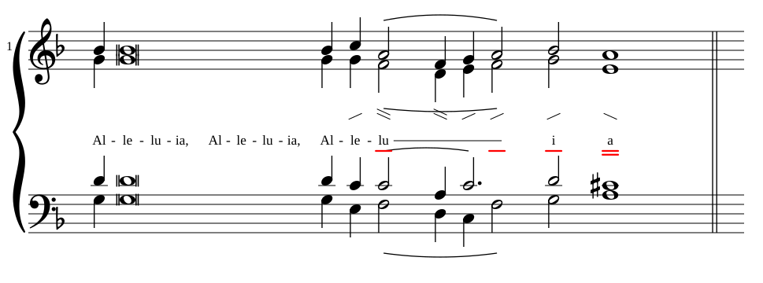
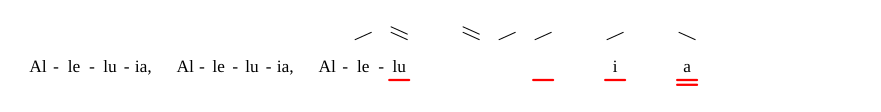
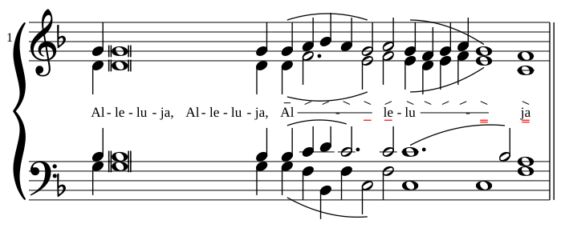
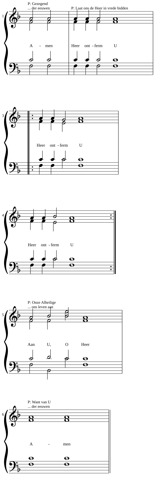
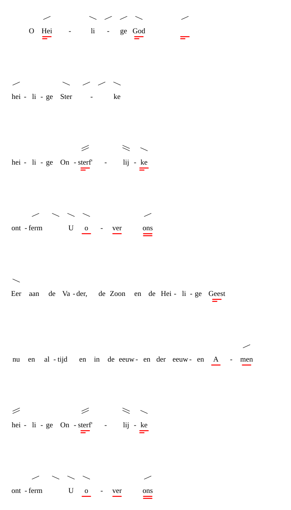
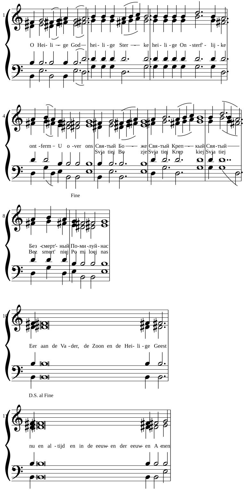

Dezelfde Score-IR, drie beelden. Dit is geen standaardproduct.
Het scherm op de site blijft OSMD. Opnieuw maken:
mvsa svg … --engine eigen --view notes|vsa-notes|vsa.
Alleluia, toon 8

Noten zonder strepen. De melisma-streep onder «lu» hoort bij de muziek.

Noten met VSA. Strepen alleen waar de toon beweegt, onderstreping op de lengtetekens.

Kale VSA. Geen notenbalk.
Alleluia, toon 2

De liggende streep staat alleen in het melisma, niet boven elke gelijke toon.
Vredeslitanie

Drie systemen op @nieuw-systeem, met herhaling en priesterregels.
Trisagion, toon 8a, als kale VSA

Een tropaar zonder notenbalk, in vier systemen.
Trisagion, Slavisch, met transliteratie

Noten zonder strepen. Het stuk begint in het Nederlands. Bij de Slavische verzen staat dezelfde lettergreep in Latijns schrift op de tweede regel.